LOCK IN · Guide for program staff
A freight-loading practice simulator in a web browser. What a participant does, how they join a crew, and what an instructor sees.
How LOCK IN fits togetherTwo kinds of people use it. Neither installs anything.
A participant
Opens trailer-load.com in a web browser on any computer or Chromebook, and loads freight. No account, no email, no download. To be seen by an instructor, they join the instructor's crew with its code, a name and a 4-digit PIN.
An instructor
Signs in to trailer-load.com/dashboard, the only account in LOCK IN. Makes a crew, gives out its code, and sees each person's practice on a roster that says what to coach next.
Part 1 · A participantFrom the first screen to the report at the end of a shift.
1Open the front page
Go to trailer-load.com. After a short logo, the menu is the front page. New participants start with TRAINING; it is tagged "NEW HERE? START HERE".
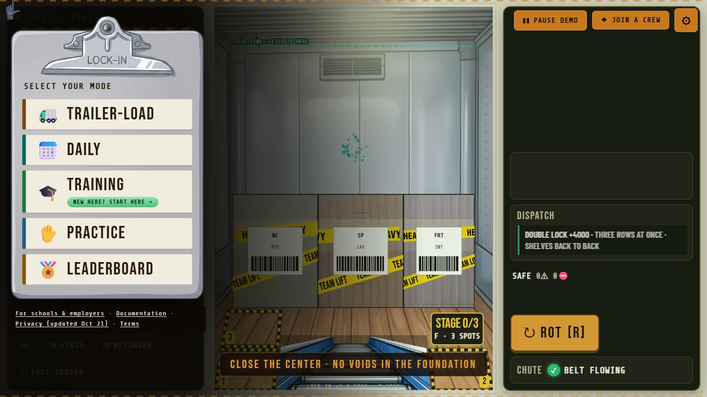
1234- 1TRAINING: start here
- 2PRACTICE: load the trainer's wall yourself
- 3TRAILER-LOAD: full tempo
- 4JOIN A CREW: the instructor's code
2TRAINING: watch the trainer
A trainer builds a full wall, one placement at a time, and gives the rule and the reason for each move. NEXT shows one placement; AUTO plays them in turn and becomes PAUSE while it runs. There is no clock and nothing to fail. At the end the participant signs the training record.
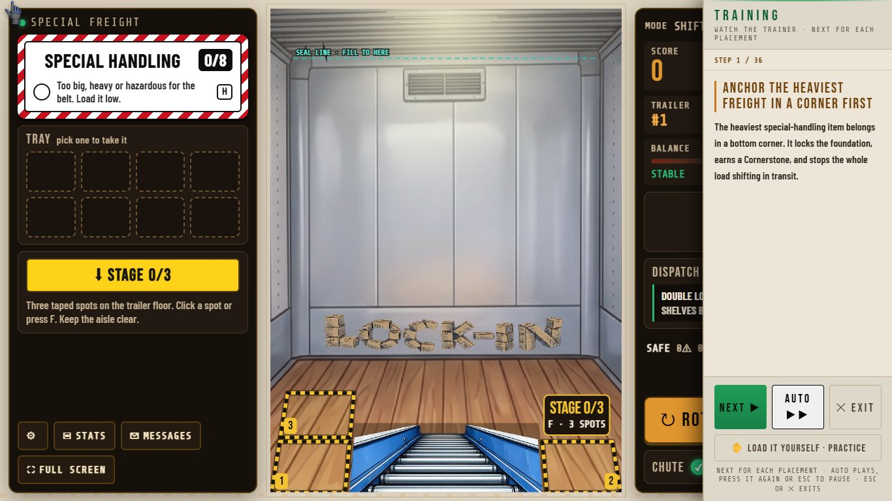
1234- 1The rule, and the reason for this move
- 2NEXT: one placement
- 3AUTO: plays on its own; press again to pause
- 4Switch to PRACTICE
3PRACTICE: load the trainer's wall yourself
The same freight, in the same order, every time. The participant places every piece under the same loading rules, with no clock, no score, no water and no write-ups. The coach gives the trainer's reason for the piece in hand and counts how many pieces went where the trainer put them. Any spot that fits and follows the rules is allowed.
A hazmat arrives late, after the belt freight. The trainer's call is to leave it on the rack for the next trailer, because there is no legal low slot left.
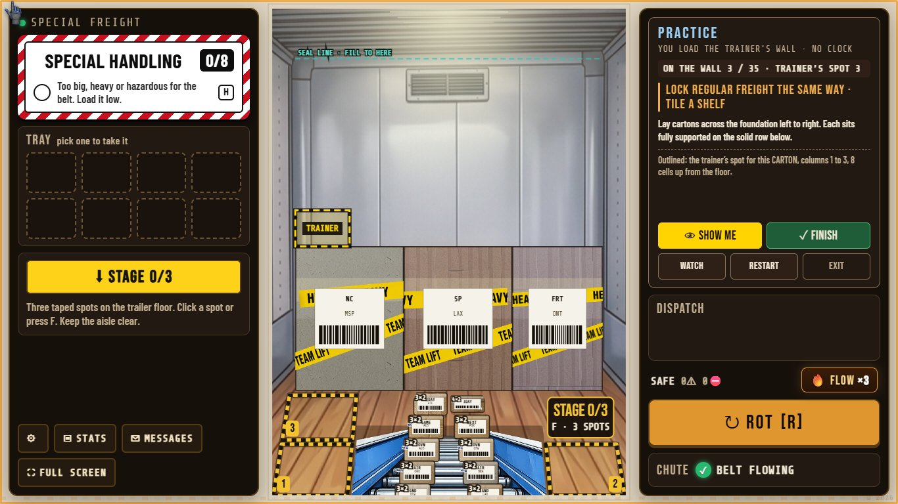
12345- 1The trainer's rule for the piece in hand
- 2Pieces on the wall, and on the trainer's spot
- 3SHOW ME: outline the trainer's spot
- 4The outline: where the trainer put it
- 5FINISH: the practice record
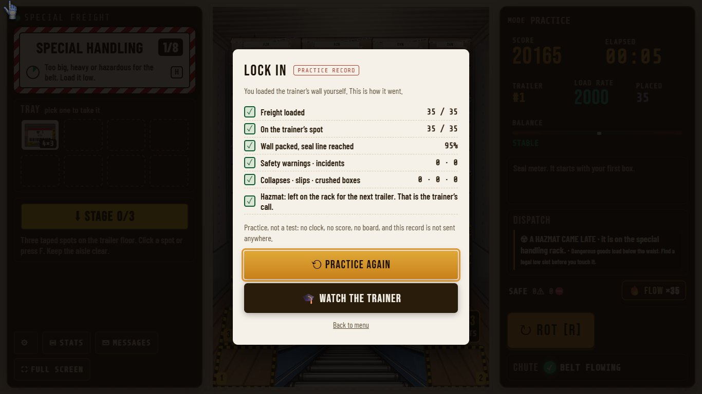
12- 1How the wall went, line by line
- 2Practice again, or watch the trainer
- The record stays on the screen. It is not sent anywhere.
4TRAILER-LOAD: a wall at full tempo
The first time, a pre-sort meeting lists ten one-line rules and the clock rule. Then the wall: freight comes up the belt, oversized pieces wait in special handling, and every placement is checked against the rules as it lands. Messages name the rule and the fix. A repeated warning becomes an incident on the record.
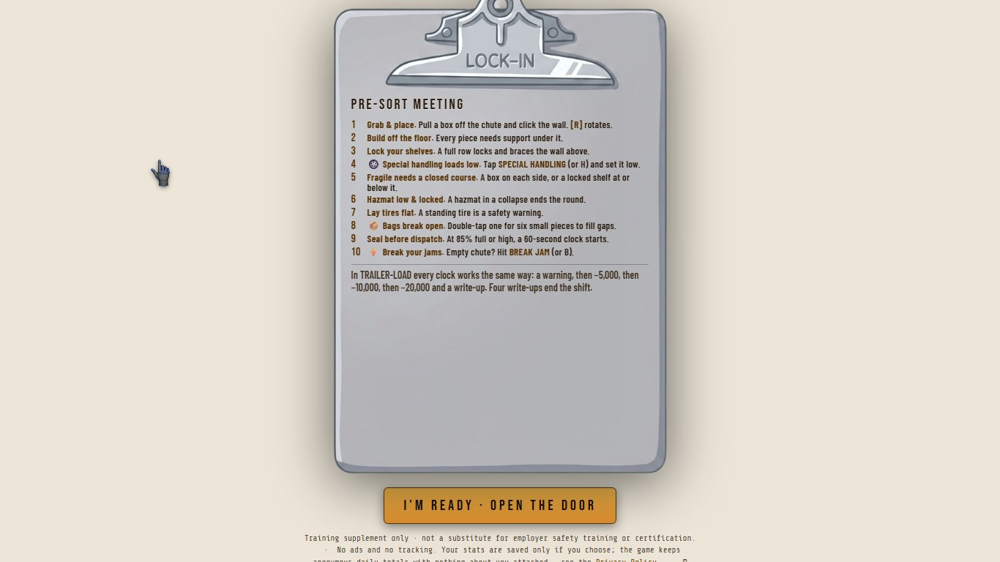
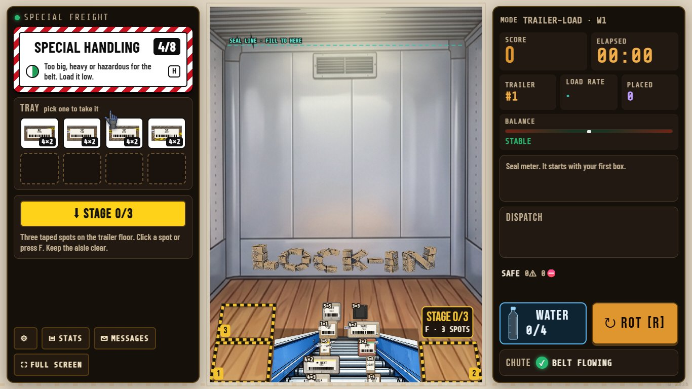
12345- 1Special handling: freight too big for the belt
- 2The trailer wall; the belt comes up from the bottom
- 3Dispatch: what happened and why
- 4ROTATE the piece in hand (R)
- 5Score, clock and pace
5Pause
P or the pause button opens the ADMIN clipboard: resume, settings, restart, clock out and see the stats, the crew, and the main menu.
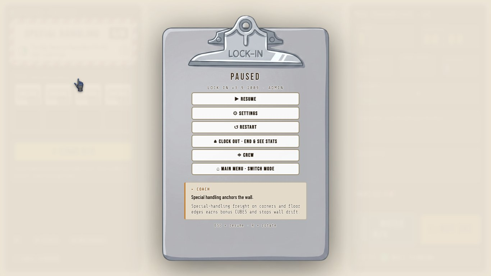
6The post-sort report
Clocking out ends the shift and shows its numbers. From there, the post-sort report covers the last wall and the whole session, with the incidents on record. It is a practice record, not a grade on the person.
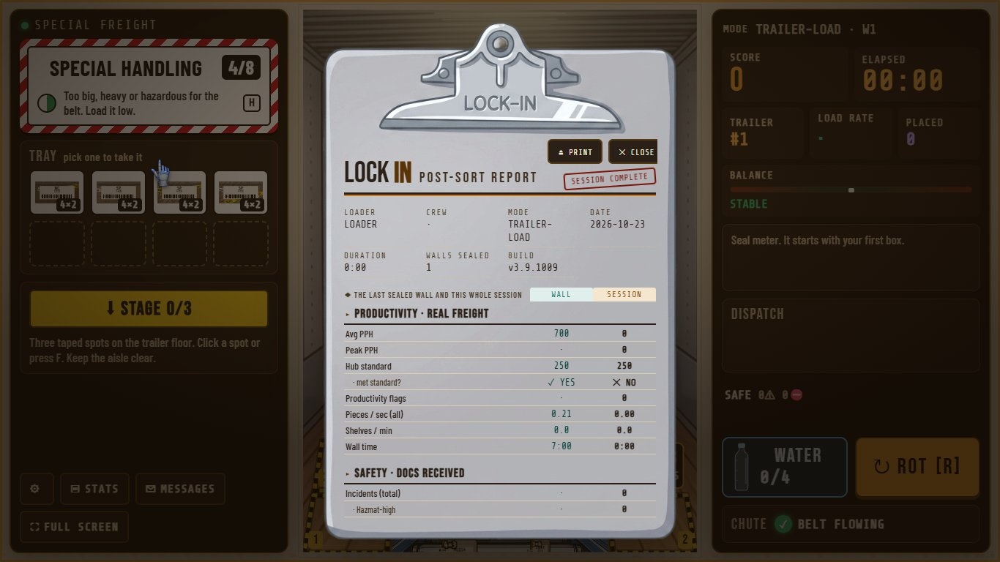
7Settings
Text size, colorblind modes, reduced motion, sound, and one-key shortcuts that can be turned off. Every menu and mode works from a keyboard.
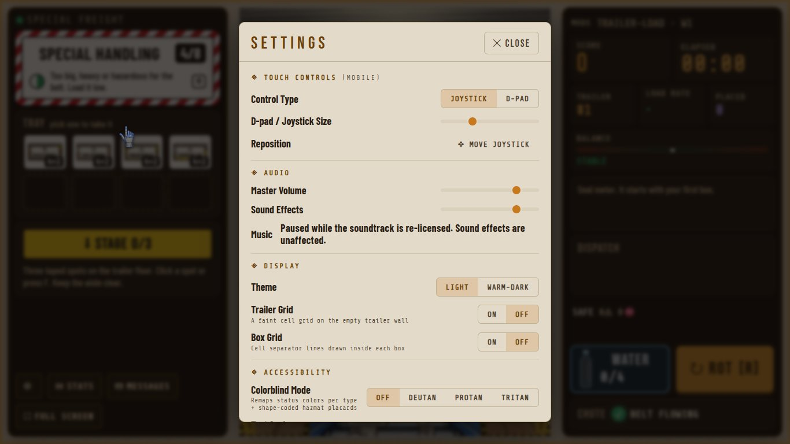
Part 2 · How a participant joins a crewThis is the participant's sign-in. There is no account and no email.
8JOIN A CREW, then the code
On the menu, top right, choose JOIN A CREW and type the code the instructor gave out.
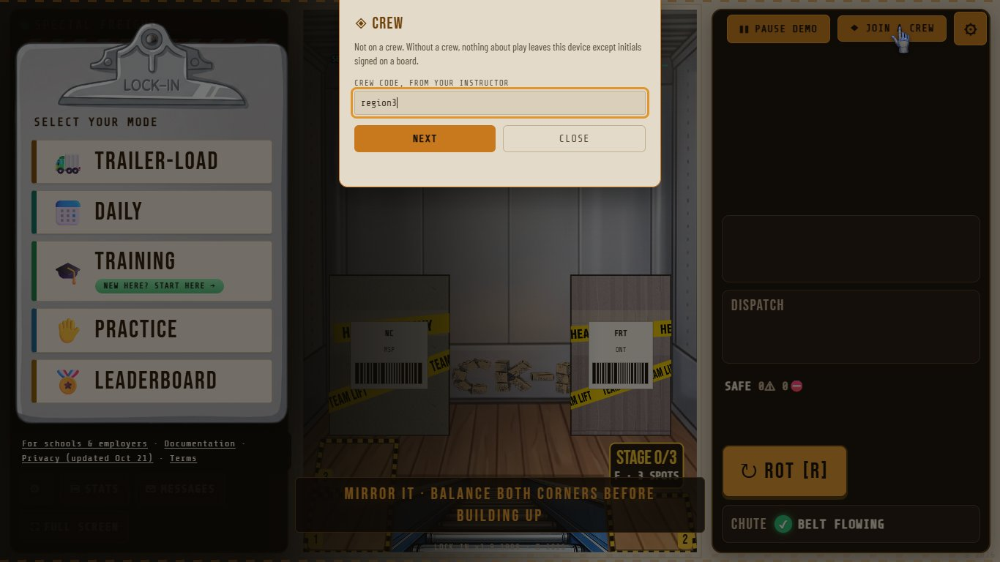
1- 1Type the crew code the instructor gave you
9A name and a PIN
On a name + PIN crew, type the name the instructor knows you by and choose a 4-digit PIN. On any other computer, the same name and PIN join you as the same person. Five wrong PINs lock the name for 15 minutes; the instructor can reset it.
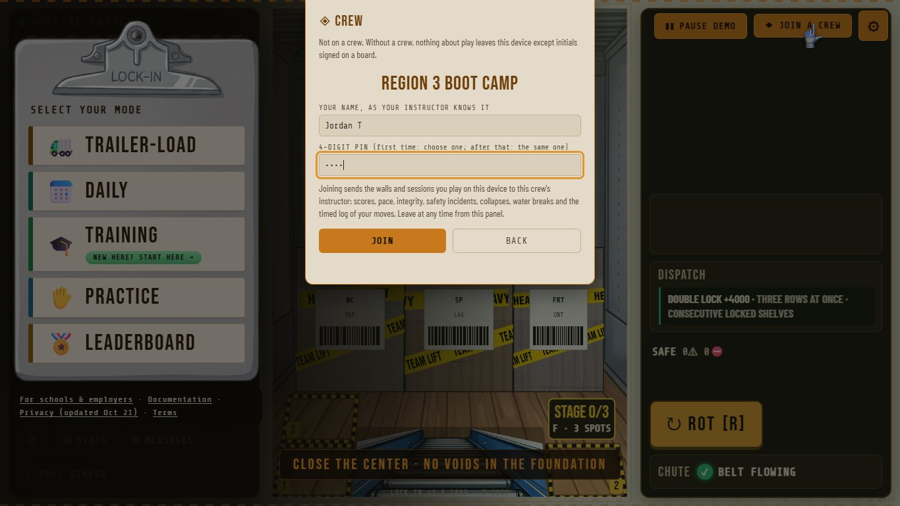
12- 1Your name, the way the instructor knows you
- 2A 4-digit PIN you choose; the same one on any computer
10Joined
The button on the menu now shows the participant's name. From here, their TRAILER-LOAD and DAILY walls and their sessions reach the instructor's roster.
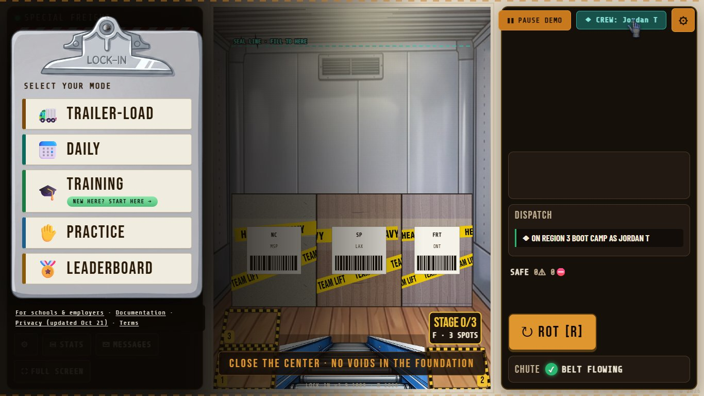
1- 1Joined: the button shows your name
11A manual crew: the personal code
On a manual crew, the instructor adds each name and hands out a personal code instead. The participant types the code once and is joined under that name.
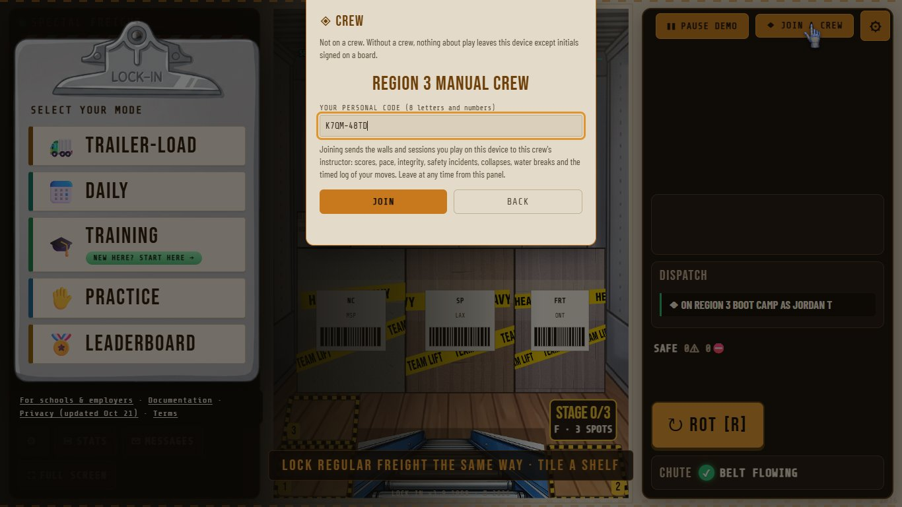
Part 3 · The instructortrailer-load.com/dashboard. The instructor is the only account in LOCK IN.
12Create an account, confirm it, sign in
An email address and a password of 12 or more characters. LOCK IN sends a confirmation link; after that, sign in. Forgot the password? The sign-in page sends a reset link.
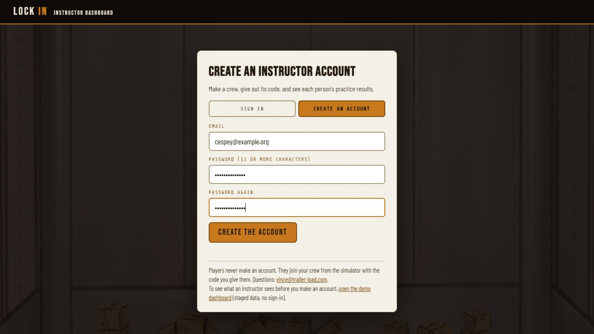
13Make a crew
A crew is a class or a cohort. Give it a name and a join code, and choose how people join: name + PIN (people add themselves) or manual (you add names and hand out personal codes).
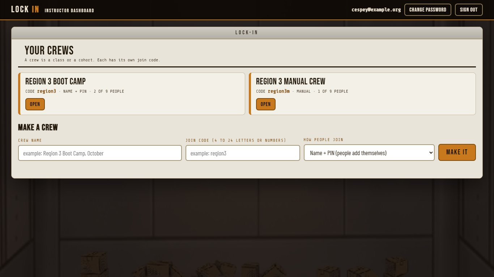
12- 1A crew: its name, code and size; OPEN shows the roster
- 2MAKE A CREW: a name, a join code, how people join
14The join card
Each crew has a join card with the steps and the code, to read out or print.
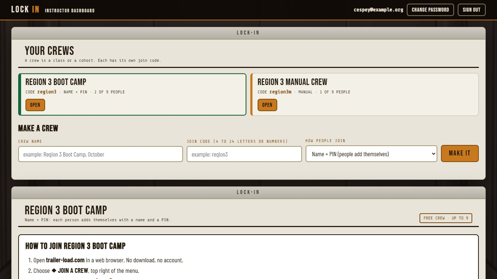
1- 1The join card: read it out or print it
15The roster and what to coach
Everyone on the crew, least practiced first. WHAT TO COACH names the rule each person broke most often, by its name in LOCK IN's rule list, with what to practice. The table on the last page explains every column.
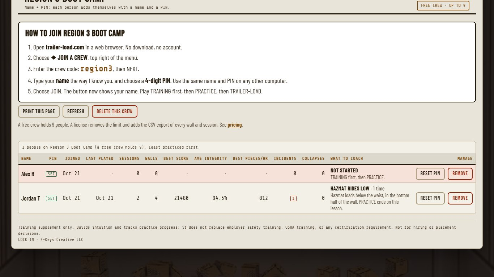
1234- 1Least practiced first
- 2Incidents: safety mistakes on record
- 3WHAT TO COACH: the rule this person breaks most
- 4RESET PIN or REMOVE a person
16See it filled in: the demo dashboard
trailer-load.com/dashboard/?demo opens the dashboard with a demo crew, no sign-in needed. Its people are simulated players: a script played LOCK IN for each of them and LOCK IN recorded their walls the way it records anyone's. It is labeled as staged and nothing in it can be changed.
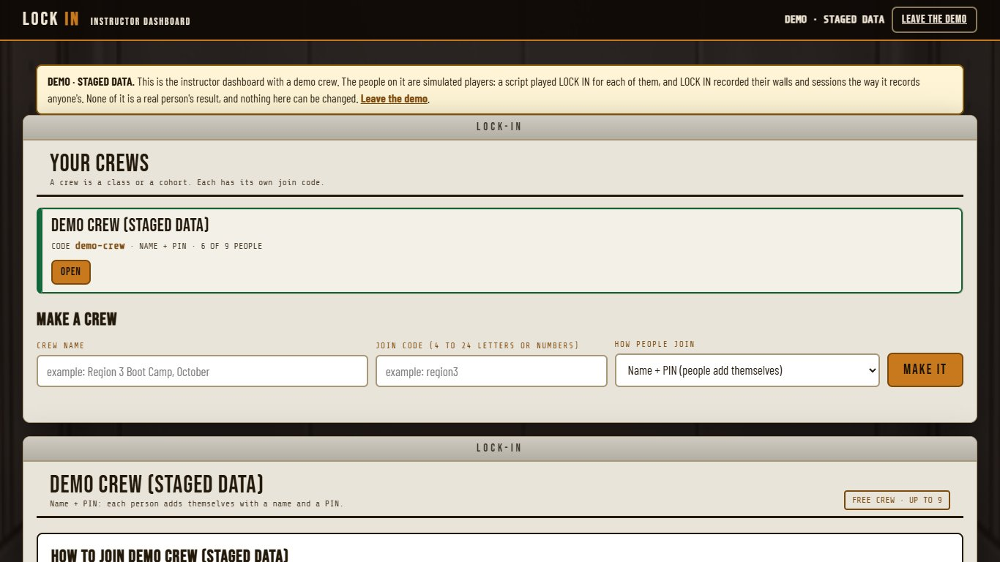
1- 1Staged data, labeled as staged
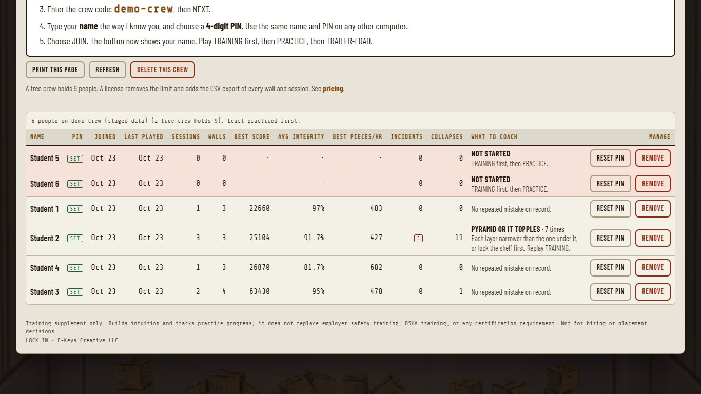
12- 1WHAT TO COACH, filled in from real play
- 2Not started yet: shown first
Part 4 · What the roster says, and what to do about itOne line on what each column is, one on what an instructor can do with it.
| Column | What it is | What to do with it |
|---|---|---|
| Sessions, Walls | How many times the person played, and how many walls they finished, on this crew. | The roster lists the least practiced first. Zero walls means they have not started: TRAINING, then PRACTICE. |
| Joined, Last played | When they joined the crew and when they last played. | A long gap is a person to check in with. |
| Best score | Their highest wall score. The score rewards a dense, stable, safe wall loaded at a steady pace. | A rising best score is progress. It is not a measure of job readiness. |
| Avg integrity | How sound their walls are, on average, from 0 to 100. Unsupported heavy freight, narrow towers, overhangs, holes and lean all lower it. | Under 70: have them run PRACTICE with SHOW ME and watch the support rules in TRAINING again. |
| Best pieces/hr | Their fastest pace on one wall, in pieces per hour. Every piece counts here, smalls included, so it can read higher than the in-game rate, which counts freight only. | Pace comes last. A fast wall with low integrity or incidents is the one to slow down. |
| Incidents | Safety mistakes on the record, such as hazmat loaded above the waist or hazard classes loaded too close. | Read WHAT TO COACH for which rule, and go over that rule with them. |
| Collapses | How many times three or more pieces came down at once. | Taper stacks, each layer narrower than the one below, and lock a shelf before building higher. |
| What to coach | The incident type the person had most often across their sessions, named as LOCK IN's rule list names it, with what to practice. With no incident on record it points to repeated collapses, low integrity, or not started. | Start the next session there. |
Good to know
- Practice, not certification. LOCK IN does not certify anyone and does not replace forklift, OSHA or hazmat training. It is practice before and alongside them. Its scores are not for deciding who is job-ready.
- Not yet studied. No study has measured LOCK IN's effect on learning yet. A pilot is how that starts.
- What is collected. Participants make no account and give no email. A crew member's walls and sessions go to their instructor under the name the instructor knows. Nothing about a disability is collected. Removing a person from a crew deletes their results. Anyone who signs a public board sends three initials and that wall's numbers, and the site keeps anonymous daily play counts.
- Access. It runs in a web browser on a computer or Chromebook. It is visual, so it does not work for someone who is blind. Keyboard play, colorblind modes, text size and reduced motion are in Settings.
For instructors who want it: how LOCK IN teaches, and how to coach from the roster. The loading rules themselves, with pictures, are on Day One.